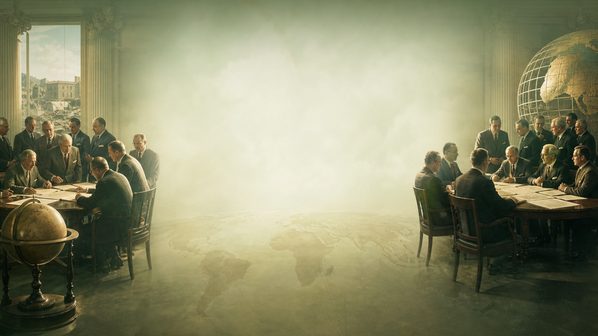
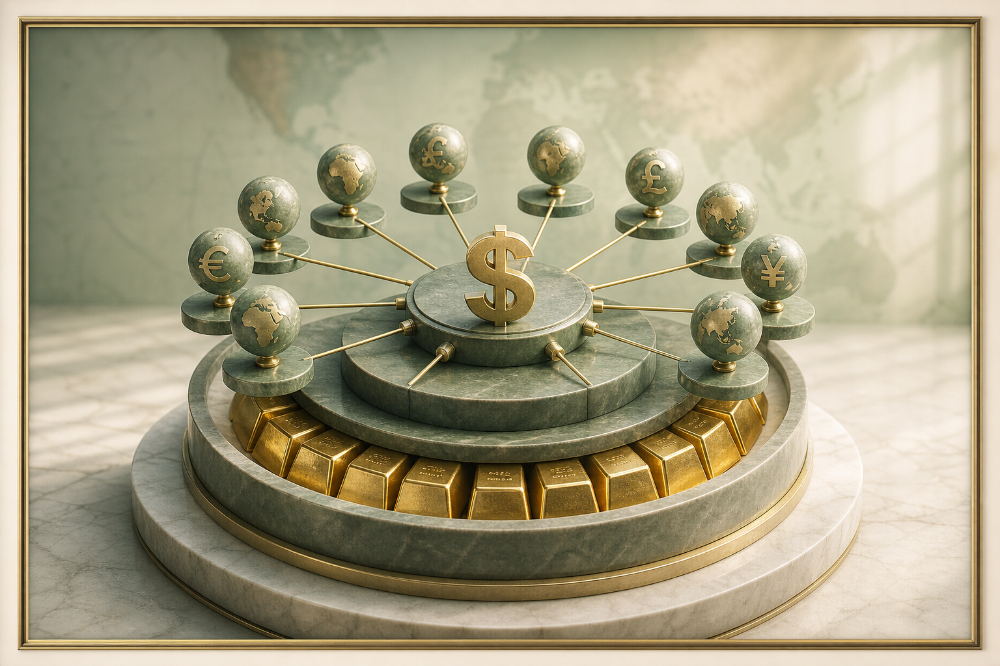

ปี 1944 ช่วงท้ายของสงครามโลกครั้งที่ 2 ประเทศฝ่ายสัมพันธมิตร
ตกลงกันว่าทุกประเทศจะนำทองคำสำรองมาฝากไว้กับสหรัฐฯ
และเอาเงินดอลลาร์ไปใช้หนุนหลังค่าเงินประจำชาติของตัวเอง
ค่าเงินของประเทศต่างๆ ตรึงไว้กับดอลลาร์
และดอลลาร์ตรึงไว้ทองคำอีกชั้นหนึ่ง
และแม้ว่าประชาชนชาวอเมริกันจะไม่สามารถเอาดอลลาร์มาแลกทองคำได้ แต่รัฐบาลสหรัฐฯ สัญญาจะให้นานาชาติเอาดอลลาร์มาแลกคืนเป็นทองคำได้เสมอ
